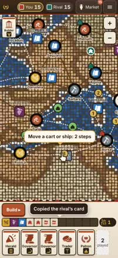
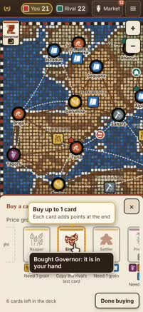
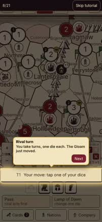
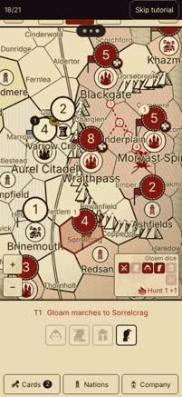
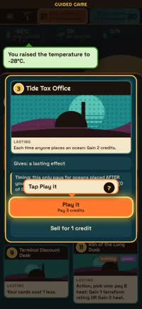
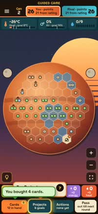
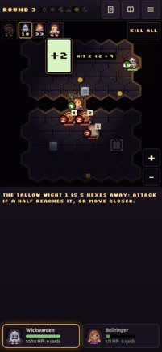
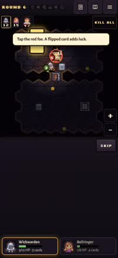

Proof: recorded on the code that is live
Generated 24 Nov 06:22 UTC. Each video was recorded by an automatic script that plays the game by tapping ONLY what the screen highlights (no hard-coded taps), at 402x874 on a phone unless it says PC. The green badge means the game file on the live site is byte-identical to the file the video was recorded on. Stills are frames from the video. Older worker videos · Panel
Twin Thrones: 40-step tutorial by touch (rules, wonder draft, board)
file on the live site matches146 s · 15.2 MB
Thornbound: tutorial 38/38 on phone
file on the live site matches58 s · 6.8 MB
Thornbound: tutorial 38/38 on PC (mouse)
file on the live site matches50 s · 5.9 MB
Onyx Atelier (Preview): 28-step rules tutorial, bubbles next to targets
file on the live site matches52 s · 4.9 MB
Meadowfold (Preview): guided first game
file on the live site matches31 s · 2.0 MB
Via Tessera (Preview): guided game
file on the live site matches49 s · 5.8 MB

Gloamwar (Preview): guided start
file on the live site matches43 s · 4.7 MB

Ochre Horizon (Preview): guided first game
file on the live site matches17 s · 1.9 MB

Wickdeep (Preview): redesigned play screen, guided first scenario
file on the live site matches72 s · 6.9 MB
